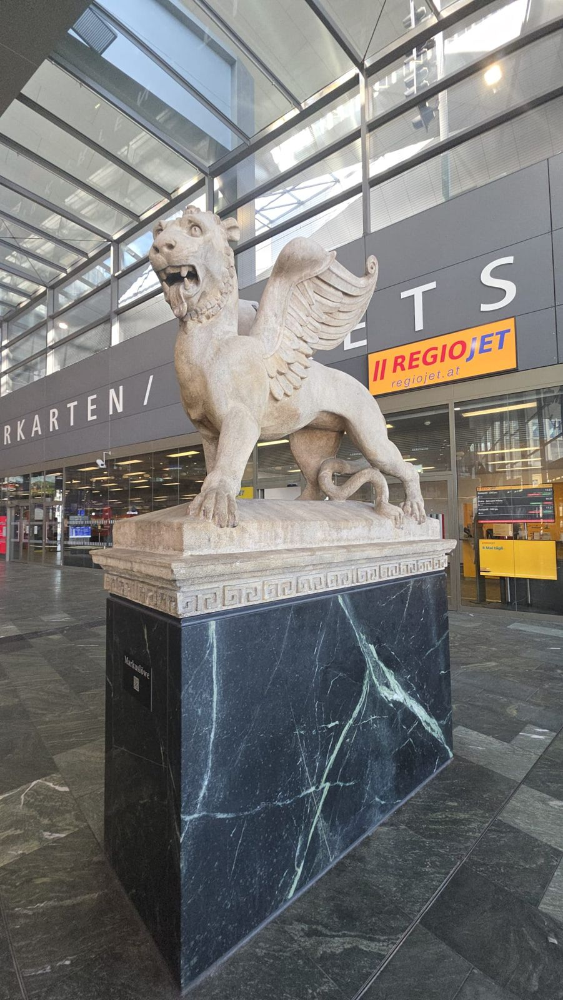
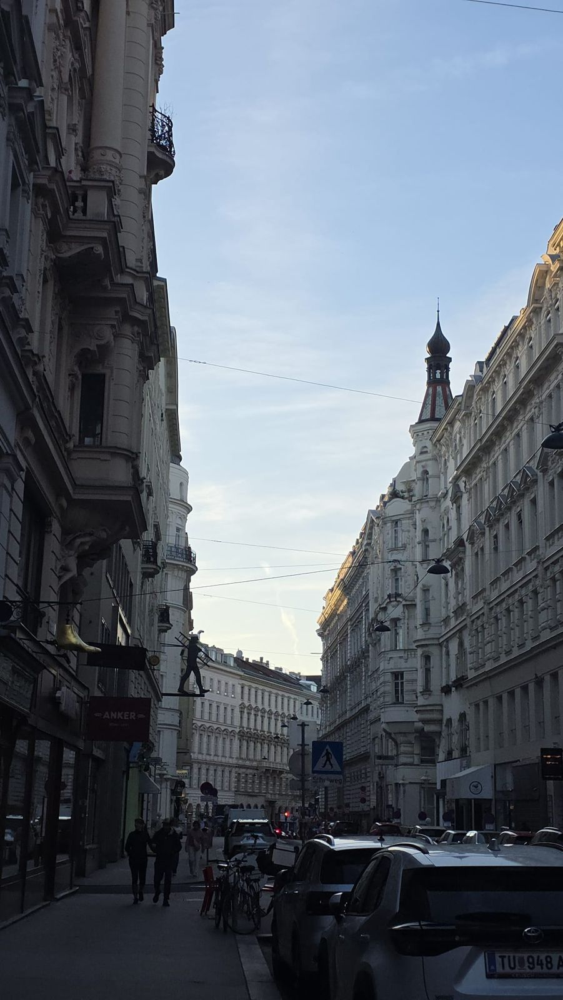
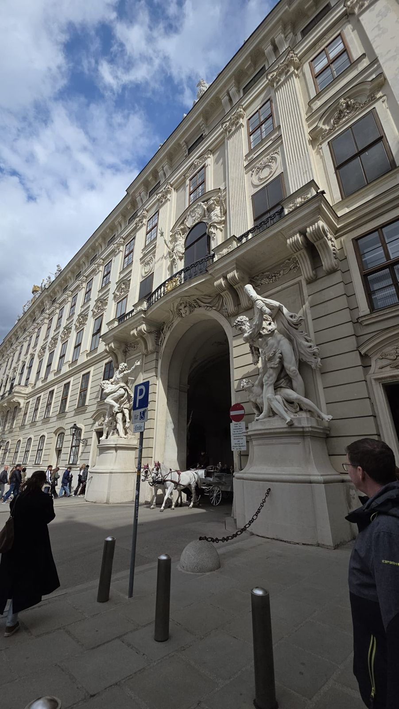
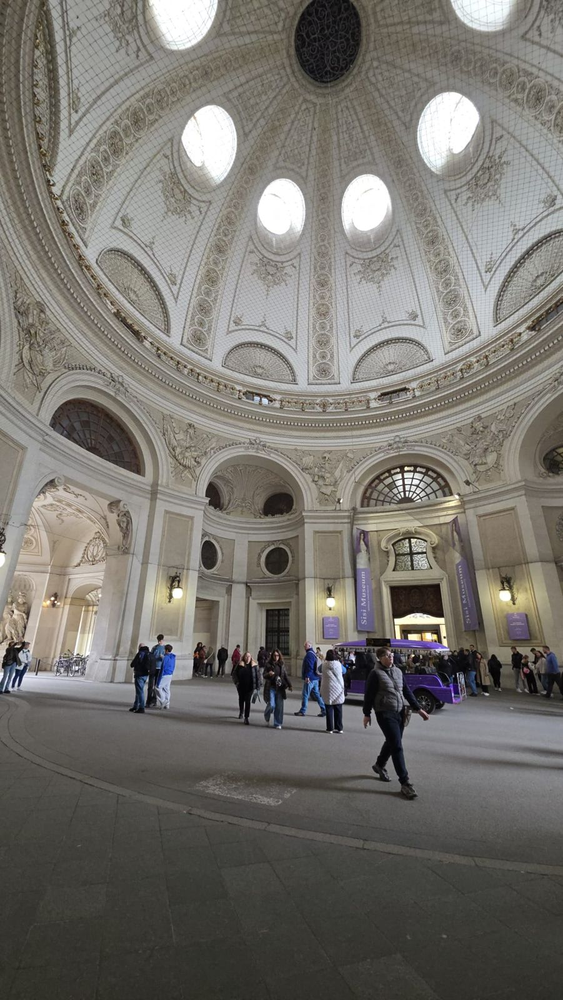
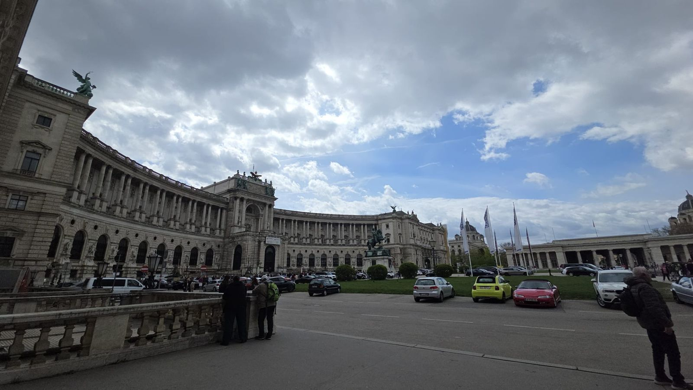
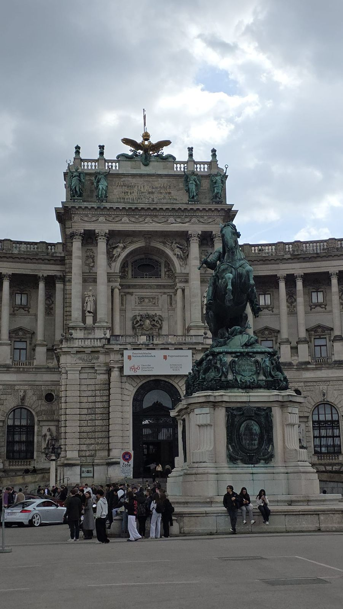
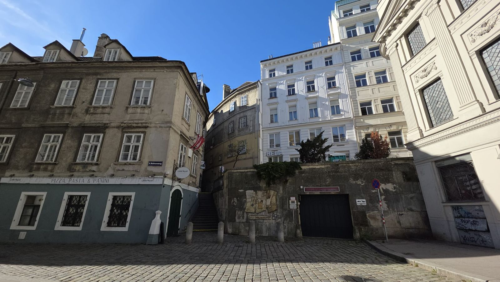
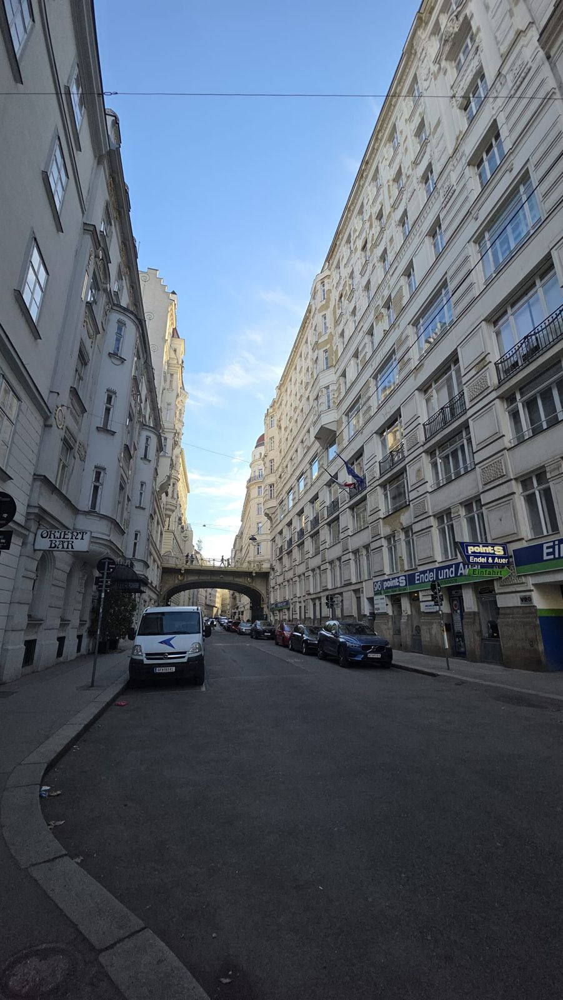
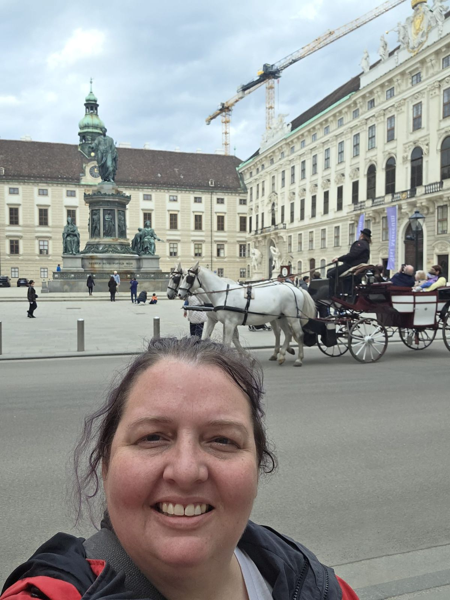

Journey 04 · Wien Note 1 of 8 Field Note
Vienna: On getting it wrong
I usually travel with a plan.
Not a loose outline. A capital P, color coded, intensely researched Plan. Tickets booked in advance, routes mapped out, restaurants researched down to what I might order. I like knowing where I’m going, how I’m getting there, and what I’ll do when I arrive. It’s efficient. It minimizes mistakes. It makes the most of limited time.

Vienna was not that.
In fact, none of my spring break travels are Planned. I’m not entirely sure why I didn’t plan the way I usually do. Part of it was time. Part of it was energy. And part of it, if I’m honest, was that I didn’t want to.
I wanted to see what would happen if I stopped trying to manage my experiences before it happened. After all, its just me traveling on my own – the only person to optimize for is myself.
I arrived with one vague goal, to see the white horses, and almost nothing else aside from a food tour right before I would leave.
No detailed itinerary, no saved restaurants, no carefully plotted walking routes. It was a very deliberate choice to not optimize the experience before it happened and just experience it. The train trip into the city was one of carefully maintaining my confidence that this was going to be okay.
I was between timed tickets, trying to get across the city faster than I could walk. Vienna has a great public transit system, and I was confident I knew how to use it. As it turns out, I did not.
My phone refused to load the app I needed to buy a ticket, so I was left trying to interpret the tram map on the fly. Confident in my very limited German, I boarded what I thought was the right line and attempted to buy a ticket onboard.
Four stops later, I still hadn’t figured out the machine. And I had gone the wrong direction. I had missed my transfer two stops back and was now further from my destination than when I started. At that point, I gave up, got off the tram, and called an Uber.

When the driver picked me up, he asked why I was being picked up instead of taking the tram, and I explained my entire situation to him.
“Oh. You are bad at being a tourist.”
Then he told me exactly what I had done wrong, how to buy tickets, what to look for on the signs, and how to navigate the system properly. He also pointed out that I had entered the wrong drop-off location, and then drove me the extra two blocks anyway.
As I got out, he called after me, “You will be a good tourist now!”
There was not gentle clucking and blessing of my heart, no polite cushioning or reassurance that it happens to the best of us. Just direct, factual correction with a layer of dry humor.
That was silly, but you made it. Now you will do better next time. And that was it.
I made my ticket window, but I kept thinking about what happened. The version of me that plans everything tries to avoid moments like this. I know that I am missing a lot of sights here, and I have a feeling that the capital-P Planner version of me would have had an optimized route with suggested timed waypoints between ticketed events.
But that version wouldn’t have had lingering coffee in a café, talking with a retired teacher who was passionate about the history of the Lipizzaner horses. She wouldn’t have noticed the sound of horse-drawn carriages clip clopping under the giant dome of the Michaelerkuppel at the Hofburg Palace.
And she definitely wouldn’t have found things by accident.
An iconic park I didn’t know I was looking for. A cathedral where a choir was practicing, the sound flowing out into the streets. A restaurant whose linage traces back to the Roman empire that serves the best goulash in Vienna.







She would have been prompt, five minutes early. Efficient, moving from one thing to the next with an illustrated checklist.
But she would have missed a lot of the adventure.
Originally published at fieldnotesfromabroad.com/2026/04/08/vienna-on-getting-it-wrong/